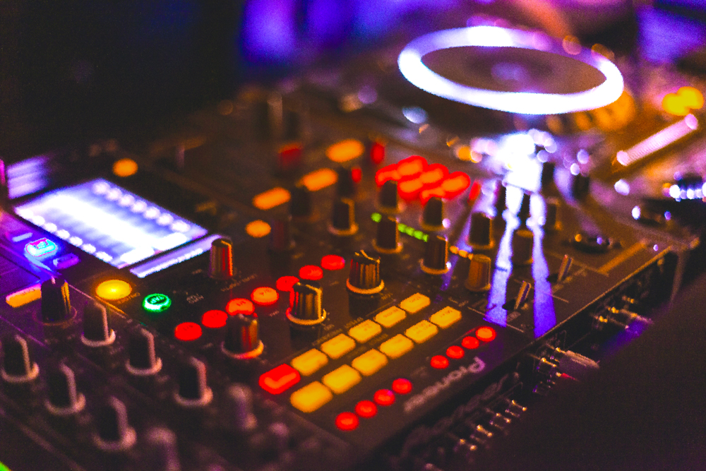

De film Saturday Night Fever (John Badham, 1977) liet de wereld kennismaken met de energie van disco: dans, identiteit en glitter in één bewegend beeld. Onder de spiegelbol vond Tony Manero — gespeeld door John Travolta — zijn ontsnapping aan de dagelijkse sleur. De dansvloer werd een plek waar afkomst, huidskleur of gender even wegvielen, en muziek een taal van vrijheid werd. Disco groeide uit van undergroundclubs in New York tot een wereldwijde stijl die muziek, mode og grafisch ontwerp beïnvloedde. Achter de glamour schuilt een verhaal over durf, inclusie en zelfexpressie — thema’s die tot vandaag inspireren in design en cultuur.
Van underground naar mainstream
Begin jaren ’70 bloeide disco in kleine clubs en loft parties in New York. DJ’s als Larry Levan en David Mancuso mixten langere versies van nummers om het publiek in trance te houden. Producers voegden strijkers, percussie en gospelharmonieën toe. De 12-inch single gaf de muziek letterlijk ruimte: langere grooves, voller geluid, luider volume. Zo ontstond een totaalervaring van muziek, licht en stijl die iedereen op de dansvloer verbond..
De sound
De typische disco-beat — four-on-the-floor — klopte onafgebroken door: de basdrum op elke tel, een schuivende hi-hat en melodische baslijnen die vooruit dreven. Daarboven glansden strijkers, blazers en falset-stemmen. Alles draaide om flow, herhaling en opbouw: muziek die niet stopt, maar beweegt.
Beeld & stijl
De visuele wereld van disco herken je meteen: spiegelbollen, laserstralen, rook, metallic stoffen, pailletten en neon. Grafisch ontwerpers gebruikten grote typografie, diagonale rasters en kleurverlopen met juweeltinten — saffierblauw, smaragdgroen, amethistpaars. Alles mocht blinken, zolang het ritme zichtbaar bleef
Disco in beweging
Korte motion design-video geïnspireerd op Saturday Night Fever.
Botsing en doorwerking
Na de piek kwam de tegenreactie: de beruchte Disco Demolition Night in 1979 symboliseerde het einde van de hype. Toch leefde de muziek voort in house, techno en pop. Hedendaagse artiesten, ontwerpers en filmmakers grijpen terug naar disco’s energie en visuele lef — net als Saturday Night Fever blijft het een bron van inspiratie.
Waarom disco vandaag?
Disco staat voor vrijheid, diversiteit en zelfexpressie. Voor ontwerpers is het een uitnodiging om ritme, glans en contrast te vertalen naar beeld. Combineer grote koppen met fijne tekst, mat met glanzend, symmetrie met beweging. Laat witruimte dansen op de maat van de beat.
Kadertje — De 12-inch single
De 12″ maxi-single gaf producers meer tijd en ruimte: langere intro’s, breakdowns en een luider, voller geluid op vinyl. Voor DJ’s betekende dat meer mogelijkheden om nummers vloeiend in elkaar te mixen — een uitvinding die de dansmuziek blijvend veranderde.
